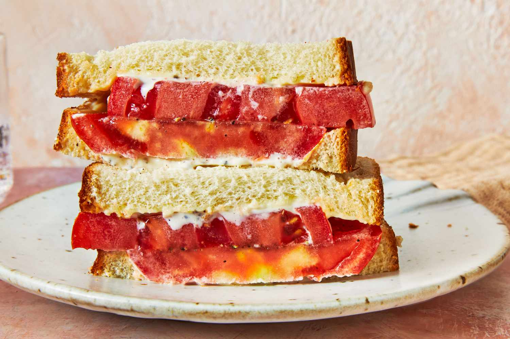

Tomato Sandwich

Description:
The Tomato Mayo Sandwich is a tasty and easy-to-enjoy treat. It's a simple combination of deliciousness tucked between two slices of toasted bread. Whether for a quick bite or a light meal, this sandwich brings straightforward satisfaction with its straightforward flavors and textures.
Ingredients:
- Tomatoes
- Butter
- Black Pepper
- Salt
- Mayonnaise
- Bread
Steps:
- Cut the tomatoes into thick slices and sprinkle them with black pepper and salt.
- In a pan, melt butter and toast the bread until it turns golden brown.
- Spread mayonnaise on the bread and add two slices of tomatoes.
- Done!